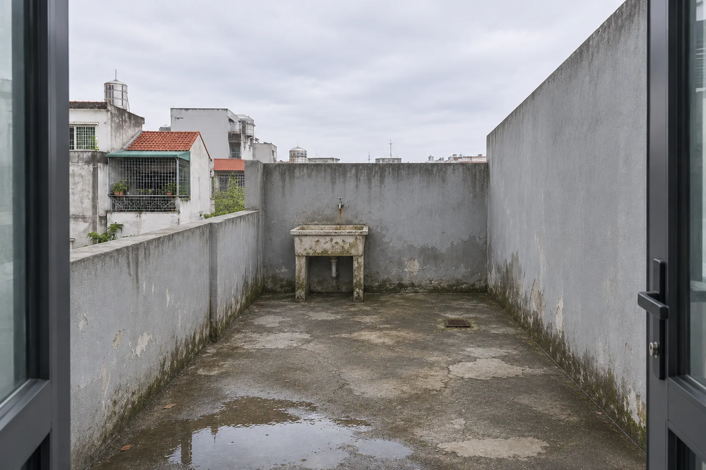

Sân mái Mùa Mưa
Xử lý vùng đọng nước ở sân phơi nhỏ.
- Loại công trình
- Kỹ thuật
- Diện tích mẫu
- 32 m²
- Tiến độ minh họa
- 3 tuần

Mục tiêu
Có một lối khô từ cửa tới khu giặt và giữ khả năng mở nắp kiểm tra rãnh thoát. Toàn bộ phần phơi vẫn sử dụng ngoài trời.
Hiện trạng giả định
Lớp vữa mòn, nước đọng gần chân cửa và vật dụng kê trực tiếp che miệng thu. Trần bên dưới từng xuất hiện vệt ố sau mưa.
Phương án
Ưu tiên xác định đường nước, đối chiếu mép cửa và các cổ xuyên sàn. Tách phần chống thấm, lớp tạo dốc và gạch chống trượt thành các hạng mục có kiểm tra trước khi che.
Kết quả minh họa
Hồ sơ minh họa cho thấy đường nước thoát về rãnh dọc cạnh sân và vị trí đi khô từ cửa. Tiến độ bàn giao phụ thuộc điều kiện thời tiết và kiểm tra tại chỗ.

Hồ sơ bàn giao
Mặt bằng thoát nước, checklist chân tường và ảnh kiểm tra trước khi lát.
Gạch nhám · rãnh thoát có nắp mở · giàn thép nhẹ